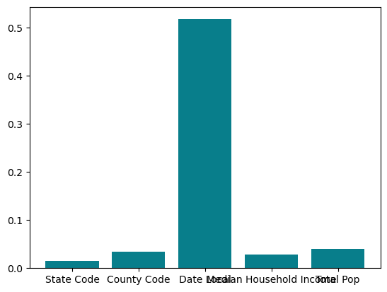
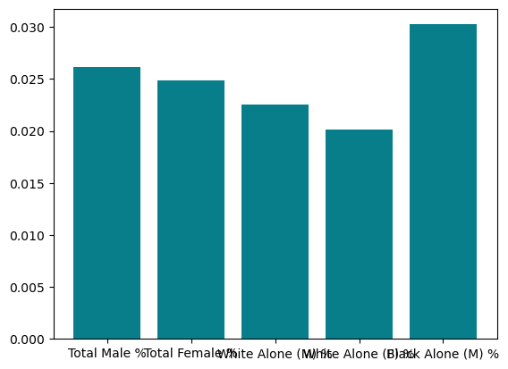
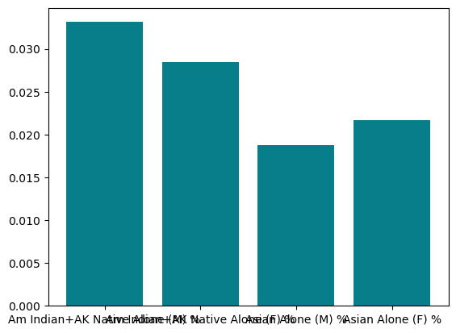
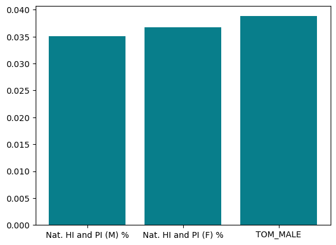
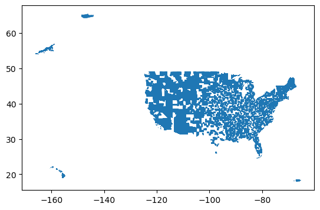
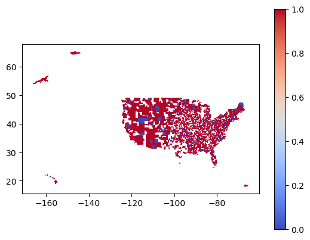

import warnings
warnings.filterwarnings('ignore')from sklearn.model_selection import train_test_split
import pandas as pd
import numpy as np
#for the map
#geo pandas, store in dataframe but it is geo referenced to right places
# we can do this to try and predict good / bad air quality index for places in the united states
# based on our model this is so interesting , we can also maybe try and look it at other
# have county codes and predictions, geo reference data frame that makes map, combine on county codes What We can Learn from the Following / Reasoning behind it all: Logistic Regression
Step one was cleaning the data; getting a binary AQI value for our training data, using logistic regression here to begin. Dropping all of the values that play into total AQI as well as categorical data such as state, county, and city. Looking at exclusively different race percentages and household income.
When we tested for feature importance in Logistic Regression, Household income had the biggest impact. This means we should be looking at household income as it relates to urban pollution, as well as the next most important factors which were state code, county code, total population, percent male, percent female, and then percentages of white alone.
I also dropped non-city data to specifically look at urban pollution.
Going to continue by looking at what happens with different models.
#place holder until we get dataset ready
data = pd.read_csv("pollution_income_race.csv")
data = data[data["City"] != "Not in a city"]
data["AQI Binary"] = 1 * (data["AQI Total"] <= 100)
#our labels are the AQI Binary for now
y = data.loc[:,"AQI Binary"]
#also going to drop states and cities for now, (and city) because we don't get a numerical from that
data = data.drop(columns=["State_x",
"County_x",
"City",
"State_y",
"County_y",
"AQI Total",
"AQI Binary"])
#finally, drop those features that directly contribute to AQI (i.e. NO2 Mean, NO2 1st Max Value)
data = data.drop(columns=["NO2 Mean",
"NO2 1st Max Value",
"NO2 1st Max Hour",
"NO2 AQI",
"O3 Mean",
"O3 1st Max Value",
"O3 1st Max Hour",
"O3 AQI",
"SO2 Mean",
"SO2 1st Max Value",
"SO2 1st Max Hour",
"SO2 AQI",
"CO Mean",
"CO 1st Max Value",
"CO 1st Max Hour",
"CO AQI"])
#train and test data
X_train, X_test, y_train, y_test = train_test_split(data, y, test_size=0.33, random_state=42)#feature importance
X_train| State Code | County Code | Date Local | Median Household Income | Total Pop | Total Male % | Total Female % | White Alone (M) % | White Alone (F) % | Black Alone (M) % | Black Alone (F) % | Am Indian+AK Native Alone (M) % | Am Indian+AK Native Alone (F) % | Asian Alone (M) % | Asian Alone (F) % | Nat. HI and PI (M) % | Nat. HI and PI (F) % | TOM_MALE | |
|---|---|---|---|---|---|---|---|---|---|---|---|---|---|---|---|---|---|---|
| 66 | 6 | 1 | 2002 | 113518.0 | 10021506 | 0.495390 | 0.504610 | 0.244432 | 0.238668 | 0.051896 | 0.056041 | 0.005613 | 0.005458 | 0.161241 | 0.171451 | 0.004578 | 0.004916 | 0.027631 |
| 835 | 32 | 3 | 2001 | 62496.0 | 13662646 | 0.500808 | 0.499192 | 0.349270 | 0.334776 | 0.065935 | 0.068644 | 0.006304 | 0.006135 | 0.048658 | 0.058518 | 0.004651 | 0.004758 | 0.025988 |
| 67 | 6 | 1 | 2003 | 113518.0 | 10021506 | 0.495390 | 0.504610 | 0.244432 | 0.238668 | 0.051896 | 0.056041 | 0.005613 | 0.005458 | 0.161241 | 0.171451 | 0.004578 | 0.004916 | 0.027631 |
| 447 | 6 | 95 | 2001 | 83678.0 | 2716962 | 0.501149 | 0.498851 | 0.300509 | 0.288954 | 0.074948 | 0.072824 | 0.006718 | 0.006442 | 0.076265 | 0.088328 | 0.005441 | 0.005261 | 0.037269 |
| 217 | 6 | 37 | 2012 | 75624.0 | 59665436 | 0.495714 | 0.504286 | 0.353743 | 0.349500 | 0.042930 | 0.046823 | 0.007591 | 0.007220 | 0.073381 | 0.082331 | 0.001828 | 0.001838 | 0.016241 |
| ... | ... | ... | ... | ... | ... | ... | ... | ... | ... | ... | ... | ... | ... | ... | ... | ... | ... | ... |
| 1133 | 42 | 69 | 2002 | 56911.0 | 1294150 | 0.489517 | 0.510483 | 0.437606 | 0.461313 | 0.024152 | 0.021254 | 0.001740 | 0.001697 | 0.016049 | 0.016100 | 0.000323 | 0.000383 | 0.009646 |
| 1184 | 42 | 101 | 2005 | 55102.0 | 9562106 | 0.475856 | 0.524144 | 0.218985 | 0.226435 | 0.200090 | 0.235551 | 0.004473 | 0.004774 | 0.037813 | 0.041240 | 0.000867 | 0.000898 | 0.013629 |
| 1219 | 42 | 133 | 2000 | 71655.0 | 2743046 | 0.497499 | 0.502501 | 0.438321 | 0.443527 | 0.037588 | 0.036162 | 0.002079 | 0.001843 | 0.007190 | 0.008613 | 0.000395 | 0.000416 | 0.011926 |
| 924 | 36 | 103 | 2002 | 109084.0 | 9152726 | 0.495513 | 0.504487 | 0.416442 | 0.422438 | 0.043497 | 0.045976 | 0.003550 | 0.003241 | 0.021259 | 0.022082 | 0.000557 | 0.000519 | 0.010207 |
| 1215 | 42 | 129 | 2005 | 59349.0 | 2123436 | 0.493617 | 0.506383 | 0.464779 | 0.479903 | 0.014620 | 0.012278 | 0.000807 | 0.000656 | 0.004862 | 0.005320 | 0.000122 | 0.000111 | 0.008428 |
858 rows × 18 columns
y_train
#making y_train into categorical (good, bad) for now. 1 is good, 0 is worst
#using threshold from epa.gov: 100 and below gets 1, 101 and above gets 066 1
835 1
67 1
447 1
217 1
..
1133 1
1184 1
1219 1
924 1
1215 1
Name: AQI Binary, Length: 858, dtype: int64X_train.columns.values.tolist()['State Code',
'County Code',
'Date Local',
'Median Household Income',
'Total Pop',
'Total Male %',
'Total Female %',
'White Alone (M) %',
'White Alone (F) %',
'Black Alone (M) %',
'Black Alone (F) %',
'Am Indian+AK Native Alone (M) %',
'Am Indian+AK Native Alone (F) %',
'Asian Alone (M) %',
'Asian Alone (F) %',
'Nat. HI and PI (M) %',
'Nat. HI and PI (F) %',
'TOM_MALE']data.dtypesState Code int64
County Code int64
Date Local int64
Median Household Income float64
Total Pop int64
Total Male % float64
Total Female % float64
White Alone (M) % float64
White Alone (F) % float64
Black Alone (M) % float64
Black Alone (F) % float64
Am Indian+AK Native Alone (M) % float64
Am Indian+AK Native Alone (F) % float64
Asian Alone (M) % float64
Asian Alone (F) % float64
Nat. HI and PI (M) % float64
Nat. HI and PI (F) % float64
TOM_MALE float64
dtype: object#try feature importance w Logistic Regression
from sklearn.linear_model import LogisticRegression
from matplotlib import pyplot as plt
from sklearn.ensemble import RandomForestClassifier
RF = RandomForestClassifier()
RF.fit(X_train, y_train)
#get importance
importances = pd.DataFrame(data =
{'Attribute': X_train.columns,
'Importance': RF.feature_importances_
})
importances.sort_values('Importance')
importances = importances[0:5]
#plot importance for features
plt.bar(x=importances['Attribute'], height=importances['Importance'], color='#087E8B')<BarContainer object of 5 artists>
#get importance
importances = pd.DataFrame(data =
{'Attribute': X_train.columns,
'Importance': RF.feature_importances_
})
importances.sort_values('Importance')
importances = importances[5:10]
#plot importance for features
plt.bar(x=importances['Attribute'], height=importances['Importance'], color='#087E8B')<BarContainer object of 5 artists>
to note:
negative feature importance means that feature actually increases our loss (so % Black alone (M) actually increases the loss of our feature).
#get importance
importances = pd.DataFrame(data =
{'Attribute': X_train.columns,
'Importance': RF.feature_importances_
})
importances.sort_values('Importance')
importances = importances[11:15]
#plot importance for features
plt.bar(x=importances['Attribute'], height=importances['Importance'], color='#087E8B')<BarContainer object of 4 artists>
#get importance
importances = pd.DataFrame(data =
{'Attribute': X_train.columns,
'Importance': RF.feature_importances_
})
importances.sort_values('Importance')
importances = importances[15:20]
#plot importance for features
plt.bar(x=importances['Attribute'], height=importances['Importance'], color='#087E8B')<BarContainer object of 3 artists>
Looking into models
Starting with some of the basic scie kit learn models to compare. Depending on how they do I think we could have a binary classifier type model and then attempt linear regression to predict actual values which might not work as well on our data.
Logistic Regression
from sklearn.linear_model import LogisticRegression
LR = LogisticRegression()
LR.fit(X_train, y_train)
print("Training Accuracy:")
print(LR.score(X_train, y_train))
print("Testing Accuracy:")
print(LR.score(X_test, y_test))Training Accuracy:
0.8916083916083916
Testing Accuracy:
0.8605200945626478Linear Regression
from sklearn.linear_model import LinearRegression
import statsmodels.api as sm
from scipy import stats
LinR = LinearRegression()
LinR.fit(X_train, y_train)
X2 = sm.add_constant(X_train)
est = sm.OLS(y_train, X2)
est2 = est.fit()
print(est2.summary())
print(LinR.score(X_train,y_train))
print(LinR.score(X_test, y_test)) OLS Regression Results
==============================================================================
Dep. Variable: AQI Binary R-squared: 0.222
Model: OLS Adj. R-squared: 0.207
Method: Least Squares F-statistic: 15.02
Date: Mon, 08 May 2023 Prob (F-statistic): 1.74e-36
Time: 09:35:57 Log-Likelihood: -107.15
No. Observations: 858 AIC: 248.3
Df Residuals: 841 BIC: 329.1
Df Model: 16
Covariance Type: nonrobust
===================================================================================================
coef std err t P>|t| [0.025 0.975]
---------------------------------------------------------------------------------------------------
const -31.2009 9.446 -3.303 0.001 -49.741 -12.660
State Code 0.0003 0.001 0.365 0.715 -0.001 0.002
County Code 3.285e-06 0.000 0.026 0.979 -0.000 0.000
Date Local 0.0265 0.002 13.431 0.000 0.023 0.030
Median Household Income -1.702e-07 8.86e-07 -0.192 0.848 -1.91e-06 1.57e-06
Total Pop -4.012e-09 9.09e-10 -4.416 0.000 -5.8e-09 -2.23e-09
Total Male % 1.3179 12.005 0.110 0.913 -22.244 24.880
Total Female % -32.5189 15.408 -2.110 0.035 -62.762 -2.276
White Alone (M) % -24.4056 15.063 -1.620 0.106 -53.972 5.160
White Alone (F) % 13.3808 22.165 0.604 0.546 -30.123 56.885
Black Alone (M) % -19.0131 14.457 -1.315 0.189 -47.389 9.362
Black Alone (F) % 8.2171 22.549 0.364 0.716 -36.042 52.476
Am Indian+AK Native Alone (M) % -16.0201 20.867 -0.768 0.443 -56.978 24.938
Am Indian+AK Native Alone (F) % 5.8647 26.545 0.221 0.825 -46.237 57.967
Asian Alone (M) % -28.0058 14.896 -1.880 0.060 -57.243 1.232
Asian Alone (F) % 18.0117 22.803 0.790 0.430 -26.745 62.769
Nat. HI and PI (M) % 99.3350 85.132 1.167 0.244 -67.761 266.431
Nat. HI and PI (F) % -111.3928 105.940 -1.051 0.293 -319.331 96.545
TOM_MALE -10.5724 27.416 -0.386 0.700 -64.384 43.239
==============================================================================
Omnibus: 246.949 Durbin-Watson: 2.019
Prob(Omnibus): 0.000 Jarque-Bera (JB): 536.718
Skew: -1.605 Prob(JB): 2.84e-117
Kurtosis: 5.169 Cond. No. 6.32e+23
==============================================================================
Notes:
[1] Standard Errors assume that the covariance matrix of the errors is correctly specified.
[2] The smallest eigenvalue is 5.7e-31. This might indicate that there are
strong multicollinearity problems or that the design matrix is singular.
0.22226355692058475
0.24682277427275767Logistic Regression with polynomial features
code for poly_LR from class notes. Doesn’t seem to be working since identical to normal LR training score and the score doesn’t change from degree = 1 to degree = 2 but unsure why.
from sklearn.preprocessing import PolynomialFeatures
from sklearn.pipeline import Pipeline
def poly_LR(degree, **kwargs):
plr = Pipeline([("poly", PolynomialFeatures(degree = degree)),
("LR", LogisticRegression(**kwargs))])
return plr
plr = poly_LR(degree = 2, max_iter = 1000000)
plr.fit(X_train, y_train)
print("Training accuracy")
print(plr.score(X_train, y_train))
print("Testing accuracy")
print(plr.score(X_test, y_test))Training accuracy
0.8916083916083916
Testing accuracy
0.8605200945626478# coefficients -- wanted to see what this looks like, they're all very small coefficients maybe that has
#something to do with how low the degrees change the accuracy?
print("coefficients of model:")
print()
print(plr.named_steps['LR'].coef_)
print("biases of model:")
print(plr.named_steps['LR'].intercept_)Support Vector Machine
from sklearn.svm import SVC
from sklearn.model_selection import cross_val_score
svc = SVC(gamma = "auto")
svc.fit(X_train, y_train)
print("Training Accuracy:")
print(svc.score(X_train, y_train))
print("Test accuracy")
print(svc.score(X_test, y_test))Training Accuracy:
0.9463869463869464
Test accuracy
0.9054373522458629best_score = -np.inf
best_gamma = np.inf
for gammas in 6**(np.arange(-4,4, dtype = float)):
svc = SVC(gamma = gammas)
scores = cross_val_score(svc, X_train, y_train,cv=8)
if scores.mean()>best_score:
best_score = scores.mean()
best_gamma = gammas
print(best_score, best_gamma)
0.9114096573208723 0.027777777777777776svc_model = SVC(gamma = .027777777777777776)
svc_model.fit(X_train,y_train)
print("training accuracy")
print(svc_model.score(X_train,y_train))
print("testing")
print(svc_model.score(X_test,y_test))training accuracy
0.9358974358974359
testing
0.9054373522458629Decision Tree Classifier
from sklearn.tree import DecisionTreeClassifier
from sklearn.model_selection import cross_val_score
best_score = -np.inf
maximum = 0
for depth in range(2,25):
tree = DecisionTreeClassifier(max_depth = depth)
#scores = cross_val_score(tree, X_train[subset], y_train, cv = 11)
scores = cross_val_score(tree, X_train, y_train, cv = 9)
if scores.mean() > best_score:
best_score = scores.mean()
maximum = depth
print(best_score, maximum)0.898525828460039 5tree = DecisionTreeClassifier(max_depth = 5)
tree.fit(X_train,y_train)
print("training")
print(tree.score(X_train,y_train))
print("testing")
print(tree.score(X_test,y_test))training
0.9335664335664335
testing
0.900709219858156working with geopandas, or trying to
#have to pip install folium, mapclassify, geopandas, matplotlib
import geopandas as gpd
import folium
import mapclassify
import matplotlib.pyplot as pltgeo_data = gpd.read_file('https://raw.githubusercontent.com/holtzy/The-Python-Graph-Gallery/master/static/data/US-counties.geojson')
geo_data.id = geo_data.id.astype(str).astype(int)
geo_data| id | GEO_ID | STATE | COUNTY | NAME | LSAD | CENSUSAREA | geometry | |
|---|---|---|---|---|---|---|---|---|
| 0 | 1001 | 0500000US01001 | 01 | 001 | Autauga | County | 594.436 | POLYGON ((-86.49677 32.34444, -86.71790 32.402... |
| 1 | 1009 | 0500000US01009 | 01 | 009 | Blount | County | 644.776 | POLYGON ((-86.57780 33.76532, -86.75914 33.840... |
| 2 | 1017 | 0500000US01017 | 01 | 017 | Chambers | County | 596.531 | POLYGON ((-85.18413 32.87053, -85.12342 32.772... |
| 3 | 1021 | 0500000US01021 | 01 | 021 | Chilton | County | 692.854 | POLYGON ((-86.51734 33.02057, -86.51596 32.929... |
| 4 | 1033 | 0500000US01033 | 01 | 033 | Colbert | County | 592.619 | POLYGON ((-88.13999 34.58170, -88.13925 34.587... |
| ... | ... | ... | ... | ... | ... | ... | ... | ... |
| 3216 | 51001 | 0500000US51001 | 51 | 001 | Accomack | County | 449.496 | MULTIPOLYGON (((-75.24227 38.02721, -75.29687 ... |
| 3217 | 51021 | 0500000US51021 | 51 | 021 | Bland | County | 357.725 | POLYGON ((-81.22510 37.23487, -81.20477 37.243... |
| 3218 | 51027 | 0500000US51027 | 51 | 027 | Buchanan | County | 502.763 | POLYGON ((-81.96830 37.53780, -81.92787 37.512... |
| 3219 | 51037 | 0500000US51037 | 51 | 037 | Charlotte | County | 475.271 | POLYGON ((-78.44332 37.07940, -78.49303 36.891... |
| 3220 | 51041 | 0500000US51041 | 51 | 041 | Chesterfield | County | 423.297 | POLYGON ((-77.85180 37.35487, -77.85515 37.418... |
3221 rows × 8 columns
#county code and state codes are the same in the two data frames
#print(data.loc[data['County Code'] == 33])
#print(geo_data.loc[geo_data['COUNTY'] == '033'])
#shifting state/county codes from objects to integers
print(geo_data.dtypes)
geo_data['COUNTY'] = geo_data.COUNTY.astype(str).astype(int)
geo_data['STATE'] = geo_data.STATE.astype(str).astype(int)
print(geo_data.dtypes)id int64
GEO_ID object
STATE int64
COUNTY int64
NAME object
LSAD object
CENSUSAREA float64
geometry geometry
dtype: object
id int64
GEO_ID object
STATE int64
COUNTY int64
NAME object
LSAD object
CENSUSAREA float64
geometry geometry
dtype: object# trying to merge the two data sets
merged_df = pd.merge(geo_data, data, left_on='COUNTY', right_on='County Code')
merged_df.plot()<Axes: >
Mapping test data (AQI Binary)
merging our X_test, y_test with the geodata. Trying to make chloropleth map.
#want to map the actual and predicted AQI for the test data
test_merge = X_test
test_merge["AQI Binary"] = y_test
test_merge = pd.merge(geo_data, X_test, left_on='COUNTY', right_on='County Code', how = "right")
fig, ax = plt.subplots(1, 1)
test_merge.plot(column="AQI Binary", ax=ax, legend=True, cmap="coolwarm")
<Axes: >
geo_data.explore()